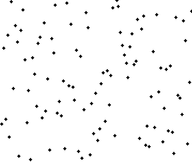

算法一：快速排序算法
快速排序是由东尼·霍尔所发展的一种排序算法。在平均状况下，排序 n 个项目要Ο(n log n)次比较。在最坏状况下则需要Ο(n2)次比较，但这种状况并不常见。事实上，快速排序通常明显比其他Ο(n log n) 算法更快，因为它的内部循环（inner loop）可以在大部分的架构上很有效率地被实现出来。
快速排序使用分治法（Divide and conquer）策略来把一个串行（list）分为两个子串行（sub-lists）。
算法步骤：
1 从数列中挑出一个元素，称为 "基准"（pivot），
2 重新排序数列，所有元素比基准值小的摆放在基准前面，所有元素比基准值大的摆在基准的后面（相同的数可以到任一边）。在这个分区退出之后，该基准就处于数列的中间位置。这个称为分区（partition）操作。
3 递归地（recursive）把小于基准值元素的子数列和大于基准值元素的子数列排序。
递归的最底部情形，是数列的大小是零或一，也就是永远都已经被排序好了。虽然一直递归下去，但是这个算法总会退出，因为在每次的迭代（iteration）中，它至少会把一个元素摆到它最后的位置去。

算法二：堆排序算法
堆排序（Heapsort）是指利用堆这种数据结构所设计的一种排序算法。堆积是一个近似完全二叉树的结构，并同时满足堆积的性质：即子结点的键值或索引总是小于（或者大于）它的父节点。
堆排序的平均时间复杂度为Ο(nlogn) 。
算法步骤：
创建一个堆H[0..n-1]
把堆首（最大值）和堆尾互换
3. 把堆的尺寸缩小1，并调用shift_down(0),目的是把新的数组顶端数据调整到相应位置
4. 重复步骤2，直到堆的尺寸为1

算法三：归并排序
归并排序（Merge sort，台湾译作：合并排序）是建立在归并操作上的一种有效的排序算法。该算法是采用分治法（Divide and Conquer）的一个非常典型的应用。
算法步骤：
1. 申请空间，使其大小为两个已经排序序列之和，该空间用来存放合并后的序列
2. 设定两个指针，最初位置分别为两个已经排序序列的起始位置
3. 比较两个指针所指向的元素，选择相对小的元素放入到合并空间，并移动指针到下一位置
4. 重复步骤3直到某一指针达到序列尾
5. 将另一序列剩下的所有元素直接复制到合并序列尾

算法四：二分查找算法
二分查找算法是一种在有序数组中查找某一特定元素的搜索算法。搜素过程从数组的中间元素开始，如果中间元素正好是要查找的元素，则搜 素过程结束；如果某一特定元素大于或者小于中间元素，则在数组大于或小于中间元素的那一半中查找，而且跟开始一样从中间元素开始比较。如果在某一步骤数组 为空，则代表找不到。这种搜索算法每一次比较都使搜索范围缩小一半。折半搜索每次把搜索区域减少一半，时间复杂度为Ο(logn) 。
算法五：BFPRT(线性查找算法)
BFPRT算法解决的问题十分经典，即从某n个元素的序列中选出第k大（第k小）的元素，通过巧妙的分 析，BFPRT可以保证在最坏情况下仍为线性时间复杂度。该算法的思想与快速排序思想相似，当然，为使得算法在最坏情况下，依然能达到o(n)的时间复杂 度，五位算法作者做了精妙的处理。
算法步骤：
1. 将n个元素每5个一组，分成n/5(上界)组。
2. 取出每一组的中位数，任意排序方法，比如插入排序。
3. 递归的调用selection算法查找上一步中所有中位数的中位数，设为x，偶数个中位数的情况下设定为选取中间小的一个。
4. 用x来分割数组，设小于等于x的个数为k，大于x的个数即为n-k。
5. 若i==k，返回x；若i<k，在小于x的元素中递归查找第i小的元素；若i>k，在大于x的元素中递归查找第i-k小的元素。
终止条件：n=1时，返回的即是i小元素。
算法六：DFS（深度优先搜索）
深度优先搜索算法（Depth-First-Search），是搜索算法的一种。它沿着树的深度遍历树的节点，尽可能深的搜索树的分 支。当节点v的所有边都己被探寻过，搜索将回溯到发现节点v的那条边的起始节点。这一过程一直进行到已发现从源节点可达的所有节点为止。如果还存在未被发 现的节点，则选择其中一个作为源节点并重复以上过程，整个进程反复进行直到所有节点都被访问为止。DFS属于盲目搜索。
深度优先搜索是图论中的经典算法，利用深度优先搜索算法可以产生目标图的相应拓扑排序表，利用拓扑排序表可以方便的解决很多相关的图论问题，如最大路径问题等等。一般用堆数据结构来辅助实现DFS算法。
深度优先遍历图算法步骤：
1. 访问顶点v；
2. 依次从v的未被访问的邻接点出发，对图进行深度优先遍历；直至图中和v有路径相通的顶点都被访问；
3. 若此时图中尚有顶点未被访问，则从一个未被访问的顶点出发，重新进行深度优先遍历，直到图中所有顶点均被访问过为止。
上述描述可能比较抽象，举个实例：
DFS 在访问图中某一起始顶点 v 后，由 v 出发，访问它的任一邻接顶点 w1；再从 w1 出发，访问与 w1邻 接但还没有访问过的顶点 w2；然后再从 w2 出发，进行类似的访问，… 如此进行下去，直至到达所有的邻接顶点都被访问过的顶点 u 为止。
接着，退回一步，退到前一次刚访问过的顶点，看是否还有其它没有被访问的邻接顶点。如果有，则访问此顶点，之后再从此顶点出发，进行与前述类似的访问；如果没有，就再退回一步进行搜索。重复上述过程，直到连通图中所有顶点都被访问过为止。
算法七：BFS(广度优先搜索)
广度优先搜索算法（Breadth-First-Search），是一种图形搜索算法。简单的说，BFS是从根节点开始，沿着树(图)的宽度遍历树(图)的节点。如果所有节点均被访问，则算法中止。BFS同样属于盲目搜索。一般用队列数据结构来辅助实现BFS算法。
算法步骤：
1. 首先将根节点放入队列中。
2. 从队列中取出第一个节点，并检验它是否为目标。
如果找到目标，则结束搜寻并回传结果。
否则将它所有尚未检验过的直接子节点加入队列中。
3. 若队列为空，表示整张图都检查过了——亦即图中没有欲搜寻的目标。结束搜寻并回传"找不到目标"。
4. 重复步骤2。

算法八：Dijkstra算法
戴克斯特拉算法（Dijkstra's algorithm）是由荷兰计算机科学家艾兹赫尔·戴克斯特拉提出。迪科斯彻算法使用了广度优先搜索解决非负权有向图的单源最短路径问题，算法最终得到一个最短路径树。该算法常用于路由算法或者作为其他图算法的一个子模块。
该算法的输入包含了一个有权重的有向图 G，以及G中的一个来源顶点 S。我们以 V 表示 G 中所有顶点的集合。每一个图中的边，都是两个顶点所形成的有序元素对。(u, v) 表示从顶点 u 到 v 有路径相连。我们以 E 表示G中所有边的集合，而边的权重则由权重函数 w: E → [0, ∞] 定义。因此，w(u, v) 就是从顶点 u 到顶点 v 的非负权重（weight）。边的权重可以想像成两个顶点之间的距离。任两点间路径的权重，就是该路径上所有边的权重总和。已知有 V 中有顶点 s 及 t，Dijkstra 算法可以找到 s 到 t的最低权重路径(例如，最短路径)。这个算法也可以在一个图中，找到从一个顶点 s 到任何其他顶点的最短路径。对于不含负权的有向图，Dijkstra算法是目前已知的最快的单源最短路径算法。
算法步骤：
1. 初始时令 S={V0},T={其余顶点}，T中顶点对应的距离值
若存在<v0,vi>，d(V0,Vi)为<v0,vi>弧上的权值
若不存在<v0,vi>，d(V0,Vi)为∞
2. 从T中选取一个其距离值为最小的顶点W且不在S中，加入S
3. 对其余T中顶点的距离值进行修改：若加进W作中间顶点，从V0到Vi的距离值缩短，则修改此距离值
重复上述步骤2、3，直到S中包含所有顶点，即W=Vi为止

算法九：动态规划算法
动态规划（Dynamic programming）是一种在数学、计算机科学和经济学中使用的，通过把原问题分解为相对简单的子问题的方式求解复杂问题的方法。 动态规划常常适用于有重叠子问题和最优子结构性质的问题，动态规划方法所耗时间往往远少于朴素解法。
动态规划背后的基本思想非常简单。大致上，若要解一个给定问题，我们需要解其不同部分（即子问题），再合并子问题的解以得出原问题的解。 通常许多 子问题非常相似，为此动态规划法试图仅仅解决每个子问题一次，从而减少计算量： 一旦某个给定子问题的解已经算出，则将其记忆化存储，以便下次需要同一个 子问题解之时直接查表。 这种做法在重复子问题的数目关于输入的规模呈指数增长时特别有用。
关于动态规划最经典的问题当属背包问题。
算法步骤：
1. 最优子结构性质。如果问题的最优解所包含的子问题的解也是最优的，我们就称该问题具有最优子结构性质（即满足最优化原理）。最优子结构性质为动态规划算法解决问题提供了重要线索。
2. 子问题重叠性质。子问题重叠性质是指在用递归算法自顶向下对问题进行求解时，每次产生的子问题并不总是新问题，有些子问题会被重复计算多次。 动态规划算法正是利用了这种子问题的重叠性质，对每一个子问题只计算一次，然后将其计算结果保存在一个表格中，当再次需要计算已经计算过的子问题时，只是 在表格中简单地查看一下结果，从而获得较高的效率。
算法十：朴素贝叶斯分类算法
朴素贝叶斯分类算法是一种基于贝叶斯定理的简单概率分类算法。贝叶斯分类的基础是概率推理，就是在各种条件的存在不确定，仅知其出现概率的情况下， 如何完成推理和决策任务。概率推理是与确定性推理相对应的。而朴素贝叶斯分类器是基于独立假设的，即假设样本每个特征与其他特征都不相关。
朴素贝叶斯分类器依靠精确的自然概率模型，在有监督学习的样本集中能获取得非常好的分类效果。在许多实际应用中，朴素贝叶斯模型参数估计使用最大似然估计方法，换言之朴素贝叶斯模型能工作并没有用到贝叶斯概率或者任何贝叶斯模型。
文章来源：www.evget.com
点我分享笔记
<p style="font-size:14px;">笔记需要是本篇文章的内容扩展！</p><br> <p style="font-size:12px;"><a href="../tougao.html" target="_blank">文章投稿，可点击这里</a></p> <p style="font-size:14px;"><a href="./runoob-user-test-intro.html" target="_blank">注册邀请码获取方式</a></p> <h3 class="text-muted"><i class="fa fa-info-circle" aria-hidden="true"></i> 分享笔记前必须<a href=".." class="runoob-pop">登录</a>！</h3> <p><a href="./runoob-user-test-intro.html" target="_blank">注册邀请码获取方式</a></p>